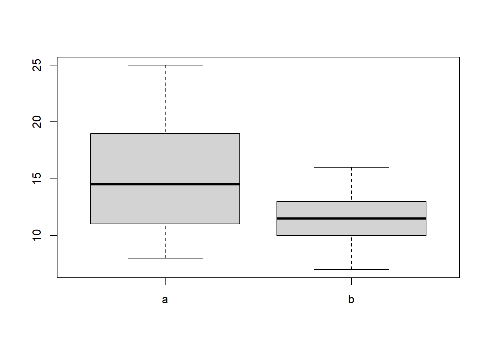
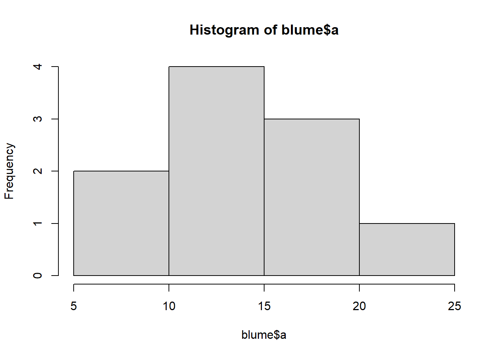
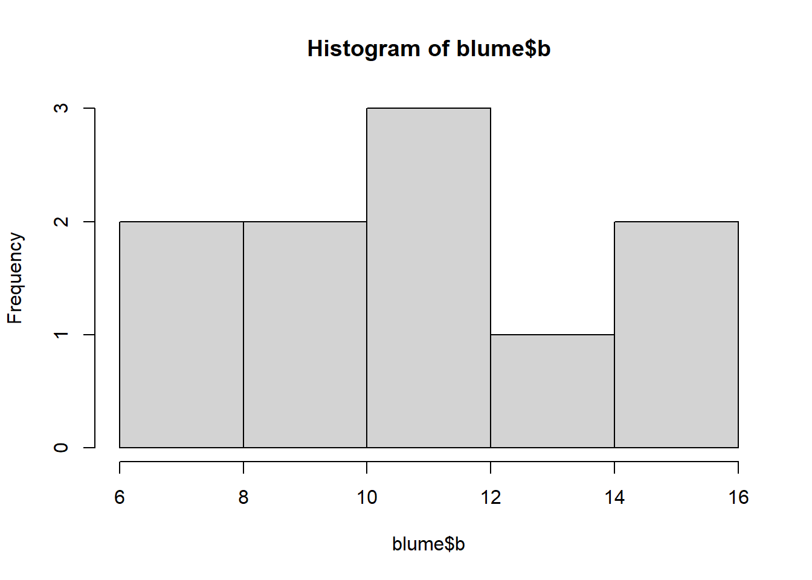
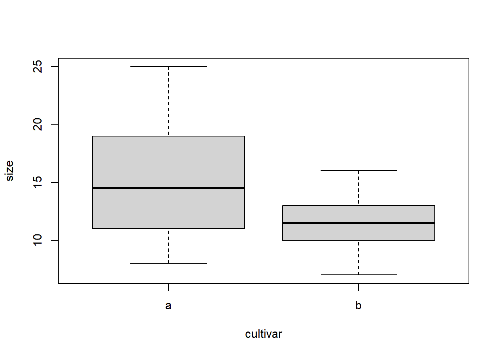
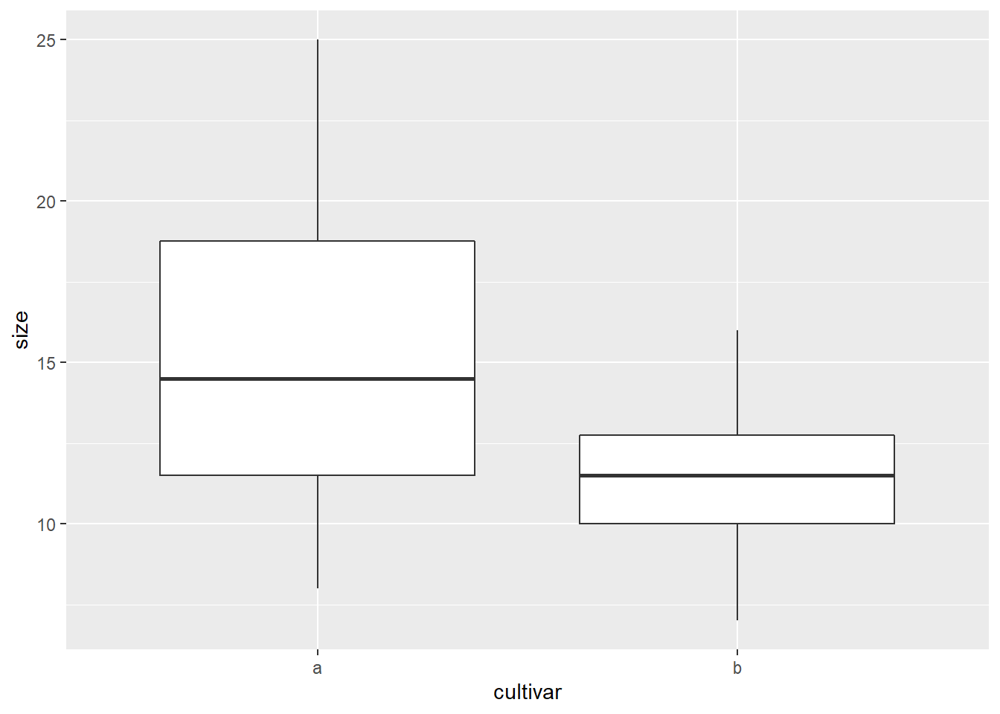
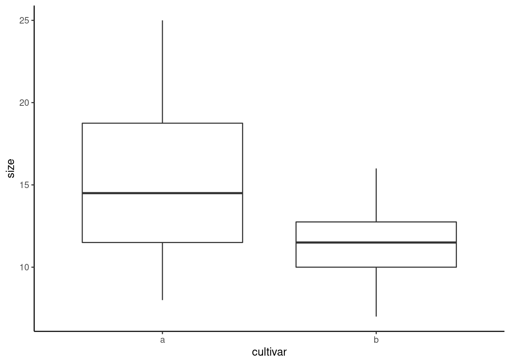
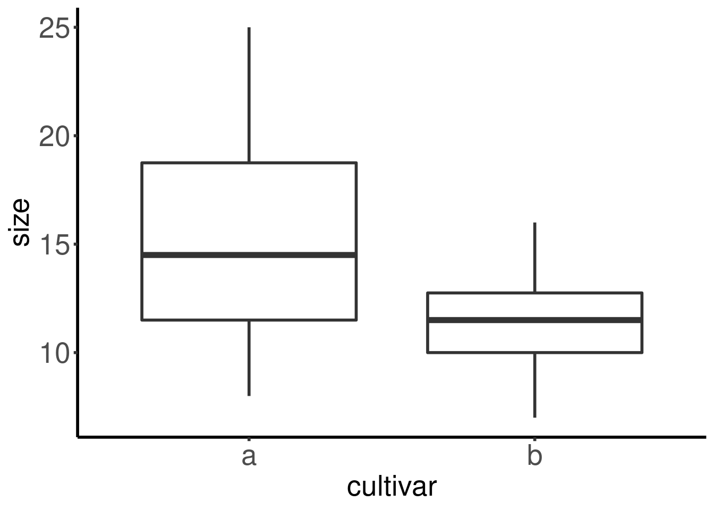
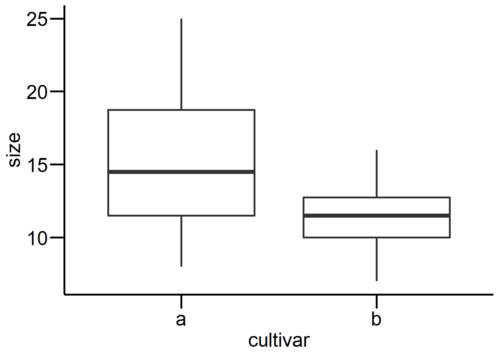
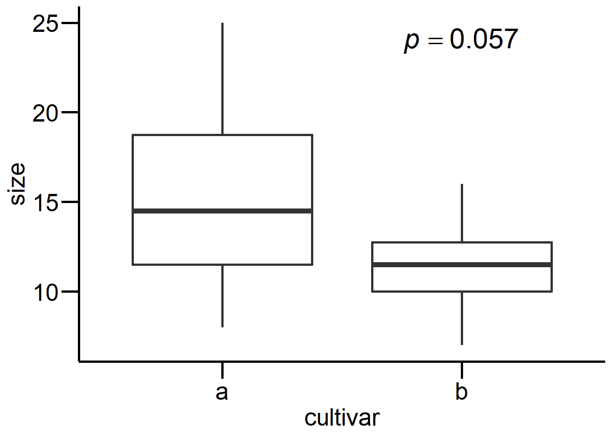
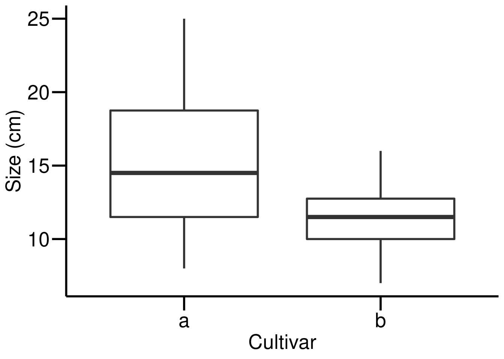

Stat1: Demo
Binomialtest
In Klammern übergibt man die Anzahl der Erfolge und die Stichprobengrösse
binom.test(43, 100)
Exact binomial test
data: 43 and 100
number of successes = 43, number of trials = 100, p-value = 0.1933
alternative hypothesis: true probability of success is not equal to 0.5
95 percent confidence interval:
0.3313910 0.5328663
sample estimates:
probability of success
0.43 binom.test(57, 100)
Exact binomial test
data: 57 and 100
number of successes = 57, number of trials = 100, p-value = 0.1933
alternative hypothesis: true probability of success is not equal to 0.5
95 percent confidence interval:
0.4671337 0.6686090
sample estimates:
probability of success
0.57 Chi-Quadrat-Test & Fishers Test
Ermitteln des kritischen Wertes
qchisq(0.95, 1)[1] 3.841459Direkter Test in R (dazu Werte als Matrix nötig)
count <- matrix(c(38, 14, 11, 51), nrow = 2)
count [,1] [,2]
[1,] 38 11
[2,] 14 51chisq.test(count)
Pearson's Chi-squared test with Yates' continuity correction
data: count
X-squared = 33.112, df = 1, p-value = 8.7e-09fisher.test(count)
Fisher's Exact Test for Count Data
data: count
p-value = 2.099e-09
alternative hypothesis: true odds ratio is not equal to 1
95 percent confidence interval:
4.746351 34.118920
sample estimates:
odds ratio
12.22697 t-Test
a <- c(20, 19, 25, 10, 8, 15, 13, 18, 11, 14)
b <- c(12, 15, 16, 7, 8, 10, 12, 11, 13, 10)
blume <- data.frame(a,b)
blume a b
1 20 12
2 19 15
3 25 16
4 10 7
5 8 8
6 15 10
7 13 12
8 18 11
9 11 13
10 14 10summary(blume) a b
Min. : 8.00 Min. : 7.00
1st Qu.:11.50 1st Qu.:10.00
Median :14.50 Median :11.50
Mean :15.30 Mean :11.40
3rd Qu.:18.75 3rd Qu.:12.75
Max. :25.00 Max. :16.00 boxplot(blume$a, blume$b)
boxplot(blume)
hist(blume$a)
hist(blume$b)
zweiseitiger t-Test
t.test(blume$a, blume$b)
Welch Two Sample t-test
data: blume$a and blume$b
t = 2.0797, df = 13.907, p-value = 0.05654
alternative hypothesis: true difference in means is not equal to 0
95 percent confidence interval:
-0.1245926 7.9245926
sample estimates:
mean of x mean of y
15.3 11.4 einseitiger t-Test
t.test(blume$a, blume$b, alternative = "greater") #einseitig
Welch Two Sample t-test
data: blume$a and blume$b
t = 2.0797, df = 13.907, p-value = 0.02827
alternative hypothesis: true difference in means is greater than 0
95 percent confidence interval:
0.5954947 Inf
sample estimates:
mean of x mean of y
15.3 11.4 t.test(blume$a, blume$b, alternative = "less") #einseitig
Welch Two Sample t-test
data: blume$a and blume$b
t = 2.0797, df = 13.907, p-value = 0.9717
alternative hypothesis: true difference in means is less than 0
95 percent confidence interval:
-Inf 7.204505
sample estimates:
mean of x mean of y
15.3 11.4 klassischer t-Test vs. Welch Test
# Varianzen gleich, klassischer t-Test
t.test(blume$a, blume$b, var.equal = T)
Two Sample t-test
data: blume$a and blume$b
t = 2.0797, df = 18, p-value = 0.05212
alternative hypothesis: true difference in means is not equal to 0
95 percent confidence interval:
-0.03981237 7.83981237
sample estimates:
mean of x mean of y
15.3 11.4 # Varianzen ungleich, Welch's t-Test, ist auch default, d.h. wenn var.equal
# nicht definiert wird, wird ein Welch's t-Test ausgeführt.
t.test(blume$a, blume$b, var.equal = F)
Welch Two Sample t-test
data: blume$a and blume$b
t = 2.0797, df = 13.907, p-value = 0.05654
alternative hypothesis: true difference in means is not equal to 0
95 percent confidence interval:
-0.1245926 7.9245926
sample estimates:
mean of x mean of y
15.3 11.4 gepaarter t-Test
t.test(blume$a, blume$b, paired = T)
Paired t-test
data: blume$a and blume$b
t = 3.4821, df = 9, p-value = 0.006916
alternative hypothesis: true mean difference is not equal to 0
95 percent confidence interval:
1.366339 6.433661
sample estimates:
mean difference
3.9 t.test(blume$a, blume$b, paired = T, alternative = "greater")
Paired t-test
data: blume$a and blume$b
t = 3.4821, df = 9, p-value = 0.003458
alternative hypothesis: true mean difference is greater than 0
95 percent confidence interval:
1.846877 Inf
sample estimates:
mean difference
3.9 Das gleiche mit einem “long table”
cultivar <- c(rep("a", 10), rep("b", 10))
size <- c(a, b)
blume.long <- data.frame(cultivar, size)
rm(size) #Befehl rm entfernt die nicht mehr benötitgten Objekte aus dem Workspace
rm(cultivar)Das gleiche in einer Zeile
blume.long <- data.frame(cultivar = c(rep("a", 10), rep("b", 10)), size = c(a, b))
summary(blume.long) cultivar size
Length:20 Min. : 7.00
Class :character 1st Qu.:10.00
Mode :character Median :12.50
Mean :13.35
3rd Qu.:15.25
Max. :25.00 head(blume.long) cultivar size
1 a 20
2 a 19
3 a 25
4 a 10
5 a 8
6 a 15boxplot(size~cultivar, data = blume.long)
t.test(size~cultivar, blume.long, var.equal = T)
Two Sample t-test
data: size by cultivar
t = 2.0797, df = 18, p-value = 0.05212
alternative hypothesis: true difference in means between group a and group b is not equal to 0
95 percent confidence interval:
-0.03981237 7.83981237
sample estimates:
mean in group a mean in group b
15.3 11.4 # gepaarter t-Test erster Wert von Cultivar a wird mit erstem Wert von Cultivar
# b gepaart, zweiter Wert von a mit zweitem von b ect.
t.test(size~cultivar, blume.long, paired = T)
Paired t-test
data: size by cultivar
t = 3.4821, df = 9, p-value = 0.006916
alternative hypothesis: true mean difference is not equal to 0
95 percent confidence interval:
1.366339 6.433661
sample estimates:
mean difference
3.9 Base R vs. ggplot2
library(tidyverse)── Attaching packages ─────────────────────────────────────── tidyverse 1.3.2 ──
✔ ggplot2 3.3.6 ✔ purrr 0.3.4
✔ tibble 3.1.8 ✔ dplyr 1.0.9
✔ tidyr 1.2.0 ✔ stringr 1.4.1
✔ readr 2.1.2 ✔ forcats 0.5.2
── Conflicts ────────────────────────────────────────── tidyverse_conflicts() ──
✖ dplyr::filter() masks stats::filter()
✖ dplyr::lag() masks stats::lag()ggplot(blume.long, aes(cultivar, size)) + geom_boxplot()
ggplot(blume.long, aes(cultivar, size)) + geom_boxplot() + theme_classic()
ggplot(blume.long, aes(cultivar, size)) + geom_boxplot(size = 1) + theme_classic()+
theme(axis.line = element_line(size = 1)) + theme(axis.title = element_text(size = 14))+
theme(axis.text = element_text(size = 14))
ggplot(blume.long, aes(cultivar, size)) + geom_boxplot(size=1) + theme_classic()+
theme(axis.line = element_line(size = 1), axis.ticks = element_line(size = 1),
axis.text = element_text(size = 20), axis.title = element_text(size = 20))
Definieren von mytheme mit allen gewünschten Settings, das man zu Beginn einer Sitzung einmal laden und dann immer wieder ausführen kann (statt des langen Codes)
mytheme <- theme_classic() +
theme(axis.line = element_line(color = "black", size=1),
axis.text = element_text(size = 20, color = "black"),
axis.title = element_text(size = 20, color = "black"),
axis.ticks = element_line(size = 1, color = "black"),
axis.ticks.length = unit(.5, "cm"))ggplot(blume.long, aes(cultivar, size)) +
geom_boxplot(size = 1) +
mytheme
t_test <- t.test(size~cultivar, blume.long)
ggplot(blume.long, aes(cultivar, size)) +
geom_boxplot(size = 1) +
mytheme +
annotate("text", x = "b", y = 24,
label = paste0("italic(p) == ", round(t_test$p.value, 3)), parse = TRUE, size = 8)
ggplot (blume.long, aes(cultivar,size)) +
geom_boxplot(size = 1) +
mytheme +
labs(x="Cultivar",y="Size (cm)")